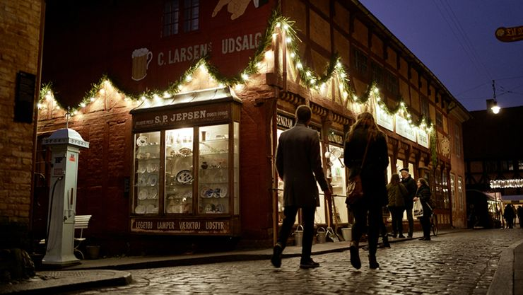

Upcoming
3 events for studerende i november
Vi har samlet tre begivenheder i november som er til overskuelig pris.
Myrkur
18. november spiller Myrkur i Aarhus Musikhus. Myrkur er kunstnernavnet på Amalie Bruun, som har spillet en blanding af heavy metal, som er inspireret af nordiske folkesang og viser. I 2020 udkom hun med albummet Folkesange, som dropper metalen, og fokusere på klassiske folkemelodier. Billet koster 280.-
Jul i den Gamle By
Den 20. november starter Jul i Den Gamle By. Her kan man nyde den hyggelige stemning i de gamle gader, og lære om hvordan man holdte jul i gamle dage. Indgang koster normalt 150.-, men er man studerende kan man få det til halv pris (75.-).
Jul på Moesgaard Museum
Den 27. november begynder også Moesgaard Museums juleudstilling, hvor man kan lære om nogle af julens fantastiske skabninger som f.eks. Krampus og Fader Jul. Studerende kan løbe entré for 110.- (normalpris: 160.-)